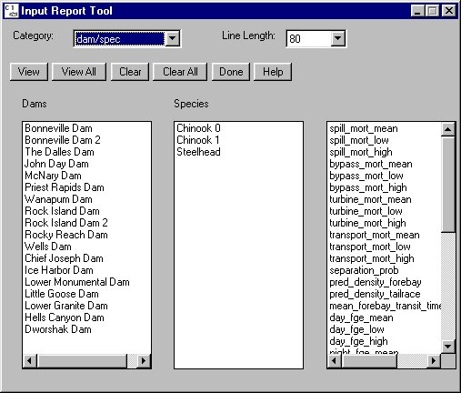

Input Data Report: Input Report Tool
Selecting Analysis Input Data Report opens the Input Report Tool for generating lists of model parameters. This tool provides an easy way for you to determine the precise values currently in memory in COMPASS and what values would be used in a Scenario Mode run. You can write the parameters values into tables that can be viewed on the screen, saved to a file, or printed. Any groupings of data can be written into the tables using the Input Report Tool. The Parameter Glossary contains definitions for all the parameters found in the Input Report Tool except for the individual parameters used in each model equation.
Input Data Report opens the Input Report Tool for generating lists of model parameters. This tool provides an easy way for you to determine the precise values currently in memory in COMPASS and what values would be used in a Scenario Mode run. You can write the parameters values into tables that can be viewed on the screen, saved to a file, or printed. Any groupings of data can be written into the tables using the Input Report Tool. The Parameter Glossary contains definitions for all the parameters found in the Input Report Tool except for the individual parameters used in each model equation.
A similar option is available for batch mode runs using the -o output_file argument to generate a parameter data file. See Starting from the Command Prompt section for more information.
Input Report Tool features
- Category: Select the types of information that will be reported: dam/spec, dam, headwater, reservoir/spec, reservoir, global, species, stock, and transport. To view selections made from multiple categories, select each category of interest and highlight the desired parameters. When all the parameters of interest have been selected, click View All to generate a report for all selections.
- Line Length: Specifies the line length of data written to the Output Window.
- View: Opens the Output Window, a text window containing the values for the parameters selected under the currently highlighted category.
- View All: Opens the Output Window, a text window containing the values for the parameters selected under all categories.
- Clear: Clears selections for the current category.
- Clear All: Clears all selections for all the categories.
- Done: Closes Input Report Tool.
- Help: Displays context-sensitive help information.
- Parameter: Select parameters by clicking on an item. Click on a selected item to clear it. The list of parameters is determined by which category is selected in Category. COMPASS keeps in memory the selections made in the Input Report Tool for all categories for the duration of the session or until selections are cleared by clicking Clear or Clear All. This is to facilitate generating reports of the same parameters for multiple data files and multiple runs.

Input Report Tool for generating tables of model parameters